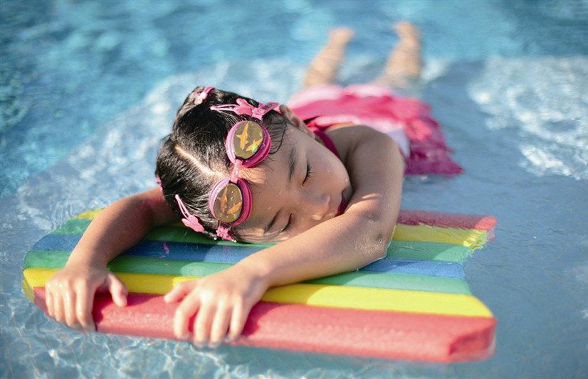
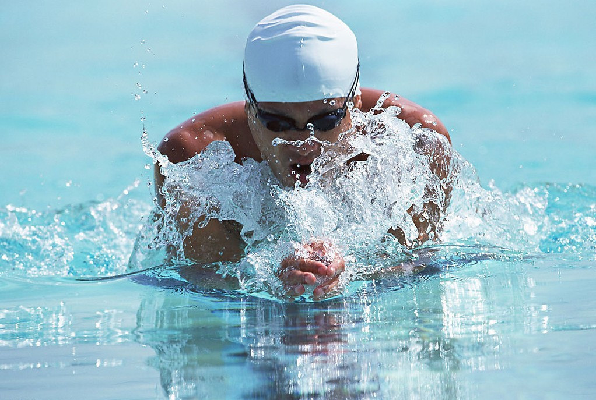

游泳（Swimming），是人在水的浮力作用下产生向上漂浮，凭借浮力通过肢体有规律的运动，使身体在水中有规律运动的技能。
17世纪60年代，英国不少地区的游泳活动就开展得相当活跃。1828年，英国在利物浦乔治码头修造了第一个室内游泳池，这种泳池到19世纪30年代，在英国各大市城相继出现。1837年，在英国伦敦成立了第一个游 泳组织，同时举办了英国最早的游泳比赛。1896年，游泳被列为奥运会竞赛项目。
游泳的最高组织机构是国际游泳联合会，总部设在瑞士洛桑。1908年由比利时、丹麦、芬兰、法国、德国、英国、匈牙利和瑞典游泳协会倡议成立。
古代游泳，根据现有史料的考证，国内外较一致的看法是产生于居住在江、河、湖、海一带的古代人。他们为了生存，必然要在水中捕捉水鸟和鱼类作食物，通过观察和模仿鱼类、青蛙等动物在水中游动的动作，逐渐学 会了游泳。中国历史悠久，水域辽阔。记载中游泳，始于五千年前。但游泳作为一个体育项目得以发展还是近一两百年的事。

17世纪60年代，英国不少地区的游泳活动就开展得相当活跃。
1828年，英国在利物浦乔治码头修造了第一个室内游泳池，这种泳池到19世纪30年代，在英国各大市城相继出现。
1837年，在英国伦敦成立了第一个游泳组织，同时举办了英国最早的游泳比赛。
1869年1月，在伦敦成立了大城市游泳俱乐部联合会（现英国业余游泳协会前身）并把游泳作为一个专门的运动项目正式固定下来。 并随之传入各英殖民地，继而传遍全世界。 随着游泳运动的发展，游泳被分为衫游泳和竞技
游泳两大类。实用游泳又分为侧泳、潜泳、反蛙泳、踩水、救护、武装泅渡；竞技游泳分为蛙泳、爬泳、仰泳、蝶泳。
1896年，游泳被列为奥运会竞赛项目时，不分泳姿，是真正的“自由式”，只有100米、500米、1200米3个项目。
1900年，第2届奥运会，将仰泳分出。
1904年，在第3届奥运会中，又分出蛙泳。
1908年，规定游泳必须在水池内比赛。国际标准游泳池长50米，宽至少21米，深1.80米以上。设8条泳道，每条泳道宽2.50米，分道线由直径5～10厘米的单个浮标连接而成。运动员比赛必须站在出发台上出发（仰泳除外），
出发台高出水面50～75厘米，台面积为50×50厘米。
1912年，第5届奥运会，女子游泳被列为比赛项目。
1951年，第1届亚运会开始，游泳就是正式的比赛项目。
1956年，第16届奥运会，又增加了蝶泳，从此定型为4种泳姿。此后的奥运会游泳比赛发展到共有自由泳、蛙泳、蝶泳、仰泳、混合泳和接力（自由泳与混合泳）6大项32个小项，是奥运会仅次于田径运动的金牌大户。
1989年，首届游泳世界杯举办。
奥运会的竞技游泳比赛由国际泳联确定参赛成绩。参赛资格分为A、B两个标准。如果一个国家（或地区）的协会在每个项目中赛，这些选手只需达到B标即可。但如果有两名选手参加同一单项的比赛，他们的成绩必须达 到A标，而且报名成绩只有在国际泳联认可的比赛中达标才算有效。在每个单项比赛中，各国或地区的奥委会或协会最多可派两名达到奥运会A标成绩的选手参加；如果达到奥运会B标，则只能派一名运动员参赛。每个接力项 目中，各个国家或地区奥委会或协会只能派出一支队伍参赛。当一个国家或地区奥委会或协会没有一名达到奥运会标准的选手时，可派出男、女各一名选手参赛。
奥运会比赛采用预赛、半决赛和决赛赛制。各项目按照预赛的成绩选出前16名参加半决赛，根据半决赛的成绩选出前8名进行决赛。
在奥运会游泳比赛中，任何一个运动员在出发时如果有抢跳犯规行为都会被取消比赛资格。自由泳、蛙泳、蝶泳及个人混合泳的各项比赛必须从出发台起跳出发，仰泳项目在水中出发。在自由泳和仰泳比赛中，运动员到
达终点时可以只用一只手触壁，但在蛙泳和蝶泳比赛中，必须使用双手同时触壁。
奥运会所有距离在50米以上的游泳比赛都必须在途中折返。转身时，自由泳和仰泳允许运动员使用身体的任何部分触及池壁，这就允许运动员可以在水下转身后，用脚去蹬池壁。转身的一个例外规则就是在个人混合泳当
中，从仰泳转换泳姿到蛙泳时，运动员必须保持仰及池壁。游泳运动员的比赛时间和地点都由一个电子系统自动决定。运动员出发时，出发台上的压力板将记录数据。每条泳道两边的墙上都有触摸板，当运动员触壁时也会被
记录。由于触摸板和出发台是互连的，因此赛会官员可以判断参加接力比赛的运动员是否是在其队友触接力比赛当中，如果任何一个运动员在其队友触壁0.03秒之前离开出发台，这个队将被自动取消比赛资格。